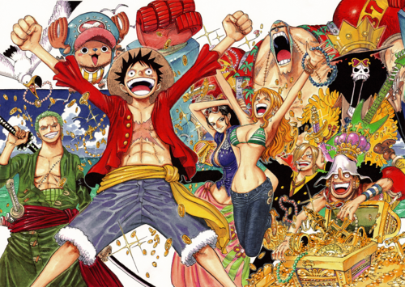
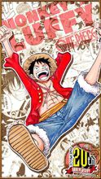
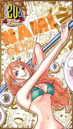
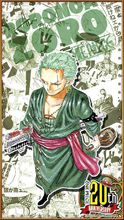
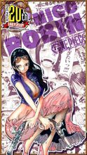

《海贼王》是日本漫画家尾田荣一郎作画的少年漫画作品，在《周刊少年Jump》1997年34号开始连载。改编的电视动画《海贼王》于1999年10月20日起在富士电视台首播。
2012年5月11日，《海贼王》获得第41回日本漫画家协会赏[1] 。截至2015年6月15日，《海贼王》以日本本土累计发行了3亿2086万6000本，被吉尼斯世界纪录官方认证为“世界上发行量最高的单一作者创作的系列漫画”[2] 。2017年7月21日，日本纪念日协会通过认证，将每年的7月22日设立为“ONE PIECE纪念日”[3] 。
创作灵感
创作海贼故事是尾田荣一郎长久以来的梦想，他小时候一直很好奇为什么没有什么漫画以海贼为主题，他顶多只知道有《北海道小英雄》这部动画。他认为男孩长到某个年纪后应该就会想要出海寻宝才对。尾田从小我就很想看海贼的漫画，那个时候他对自己说，如果要自己画的话，那就一定会画海贼的故事。不管作品卖不卖得掉，他都是作好了心理准备才会这么选择的，纯粹就是他自己想看而已 。
尾田荣一郎在初一时，第一次画了海贼漫画，而尾田对孩子冒险所抱着的想象太丰富，就一本笔记本也画不完。他认识到用“一期完”的形式来画海贼漫画是不可能的，于是他决定要在《少年JUMP》上连载海贼漫画。
1997年，尾田荣一郎创作了海贼漫画《Romance Dawn》，这部一话完结的短篇漫画正是《航海王》的创作原型，后来这个名字还被《航海王》第一话作为副标题使用。当然，虽然两部漫画的主人公都叫路飞，性格却判若两人，剧情也并不相同。
然而，《Romance Dawn》最初因页数关系没法《少年JUMP》里刊登，于是他将《Romance Dawn》的内容删减，用“一期完”的形式在《少年JUMP》的本志和增刊上刊载了它，因为尾田当时已经决定将《Romance Dawn》作为《航海王》的雏形，他也准备以《航海王》的形式书写另一个版本的《Romance Dawn》。怀着两部海贼漫画，尾田荣一郎辞去了和月伸宏的《浪客剑心》助理一职，向连载方面发展。
连载期间
尾田荣一郎小时候是看着鸟山明的《龙珠》长大的，那部作品对他影响巨大。当时尾田最大的心愿就是能在单行本中看到更多的集数。于是当他自己成为漫画家以后，坚持要让《航海王》的单行本分量更足。他小时候还有一个“打击”，他曾天真地以为《龙珠》是鸟山明一个人画的，但实际上漫画家都有助手协助。尾田第一次得知这个真相的时候，感觉“受骗了”。这个“打击”让他刻骨铭心，所以他成为漫画家之后竭尽所能不让孩子们失望。《航海王》画面中所有动态的部分都是尾田亲笔画的，助手只做一些很简单的工作。这是极少见的。
虽然尾田把这个故事画了十多年了，但的确从一开始他就想好了结局，这个结局只有几个主要编辑知道，绝不能透露。不过，虽然结局是已知的，中间的过程却未知，会有些什么故事，尾田老师自己也不知道。
尾田的煽情功力基本是他自己的，编辑在这点上很少能帮到他。编辑的作用是当一个读者，如果编辑没有被感动，那么尾田就要重新编他的故事。
关于作息时间，尾田在一次采访中透露：“每天凌晨2点睡5点起，每天共睡3小时。画完原稿后正好有一天可以休息，就睡一整天。”尾田已经这样坚持了十几年。
正片剧情
拥有财富、名声、权力，这世界上的一切的男人 “海贼王”哥尔·D·罗杰，在被行刑受死之前说了一句话，让全世界的人都涌向了大海。“想要我的宝藏吗？如果想要的话，那就到海上去找吧，我全部都放在那里。”，世界开始迎接“大海贼时代”的来临。
时值“大海贼时代”，为了寻找传说中海贼王罗杰所留下的大秘宝“ONE PIECE”，无数海贼扬起旗帜，互相争斗。有一个梦想成为海盗的少年叫路飞，他因误食“恶魔果实”而成为了橡皮人，在获得超人能力的同时付出了一辈子无法游泳的代价。十年后，路飞为实现与因救他而断臂的香克斯的约定而出海，他在旅途中不断寻找志同道合的伙伴，开始了以成为海贼王为目标的伟大的冒险旅程。

草帽海贼团
草帽海贼团中主人公蒙奇·D·路飞所集结的海贼团，旗帜图案是戴着草帽的骷髅。从东海进入伟大航路，经过“司法之岛事件”后，名扬天下。至香波地诸岛，全员被熊弹飞分散到世界各地。经由“冥王”雷利的指点，给船员们两年期间各自修炼。之后全员重新聚集于香波地诸岛，进入“新世界”。
| 介绍 |
图片 |
“草帽”蒙其·D·路飞（モンキーD·ルフィ/Monkey D. Luffy）
初次登场：漫画第1话
年龄：17岁→19岁
生日：5月5日
血型：F型
身高：172cm→174cm
故乡：东海·风车村
身份：草帽海贼团船长
喜欢的食物：所有美食，首先是肉。
爱好：喜欢探险，感兴趣于新奇怪异的事物
梦想：找到ONE PIECE，并成为海贼王。
恶魔果实：超人系橡胶果实
身世：父亲是革命军首领蒙奇·D·龙，爷爷是海军中将英雄卡普。
悬赏：3千万（可可亚西村事件）→1亿（阿拉巴斯坦事件）→3亿（司法岛事件）→4亿（顶上战争）→5亿（德雷斯罗萨篇）
由于他的标志性特征是一顶草帽，因此常被直接称呼为“草帽”。梦想是找到传说中的ONE PIECE，成为海贼王。性格积极乐观，爱憎分明且十分重视伙伴，对任何危险的事物都超感兴趣。看似白痴，却是一个大智若愚型的无愧船长之职的人。和其他传统的海贼所不同的是，他并不会为了追求财富而无故杀戮，而是享受着身为海贼的冒险。
|

|
“小贼猫”娜美（ナミ/Nami）
初次登场：漫画第8话
年龄：18岁→20岁
生日：7月3日
血型：X型
身高：169cm→170cm
三围：B95▪W55▪H85
故乡：东海·可可亚西村
身份：阿龙海贼团测量员→草帽海贼团航海士
喜欢的食物：都不错，但最喜欢橘子
爱好：钱，橘子
梦想：绘制出自己的世界地图、绘制全世界的航海图。
特征：左臂有风车和橘子样的纹身（纪念阿健和养母贝尔梅尔），左手手腕戴着一个手镯（姐姐诺琪高在娜美出海前送给她的）。
特长：绘制地图，观测天气，偷东西
悬赏：1600万（司法岛事件）→6600万（德雷斯罗萨篇）
拥有橘色的短发（两年后为波浪长发）和左肩的刺青（风车与橘子的图案）。使用棍术，现在武器为“魔法天候棒”。头脑聪明又机灵，精通气象学和航海术，擅长偷术，能用身体感知天气，完美指示航路，是个能精确画出航海图的天才航海士。本质上是个细心、善良、重视感情、嫉恶如仇、偶尔有些温柔的能干的女性。最喜欢钱和橘子，梦想是要画出全世界的地图。
|

|
“海贼猎人”罗罗诺亚·索隆（ロロノア·ゾロ/Roronoa Zoro）
初次登场：漫画第3话
年龄：19岁→21岁
生日：11月11日
血型：XF型
身高：178cm→181cm
故乡：东海·霜月村
身份：东海海贼赏金猎人→草帽海贼团战斗员
喜欢的食物：白米，海兽的肉，适合下酒的食物
爱好：睡觉、修炼、喝酒。
梦想：世界第一大剑豪
缺点：路痴
悬赏：6千万（阿拉巴斯坦事件）→1亿2000万（司法岛事件）→3亿2000万（德雷斯罗萨篇）
爱喝酒，爱睡觉，讲义气，海贼第一超级大路痴。为了小时候与挚友的约定而踏上了前往世界第一剑士的道路，随后成为路飞出海后遇到的第一个伙伴。在初次败给世界第一剑士“鹰眼米霍克”后向路飞发誓永不再败，并且更加努力的锻炼自己。两年后的他成功与伙伴们汇合，并且为了实现自己的梦想，奔赴强者如云的新世界。
|

|
“恶魔之子”妮可·罗宾（ニコ·ロビン/Nico Robin）
初次登场：漫画第114话
年龄：28岁→30岁
生日：11月11日
血型：XF型
身高：188cm
三围：B99▪W59▪H89
故乡：西海▪奥哈拉岛（已灭）
身份：奥哈拉岛考古学家→……→巴洛克工作社副社长Miss.AllSunday→草帽海贼团考古学家
喜欢的食物：三明治，不太甜的蛋糕，适合咖啡的食物
爱好：睡觉、修炼、喝酒。
特长：考古
梦想：寻找真正的“历史正文”，并且在历史正文碑的指引下，到达伟大航道的尽头“拉夫德鲁”。
恶魔果实：超人系花花果实
悬赏：7900万（奥哈拉事件[20] ）→8000万（司法岛事件）→1亿3000万（德雷斯罗萨篇）
年仅8岁就被悬赏千万的奥哈拉幸存者。在巴洛克解散后，加入草帽海贼团。个性冷静，擅长考古学以及暗杀，学识渊博，对于世界政府、海盗、航海一事都知道的很详细。目标是找到真正的历史正文，绝不饶恕践踏历史文物的人。
|

|